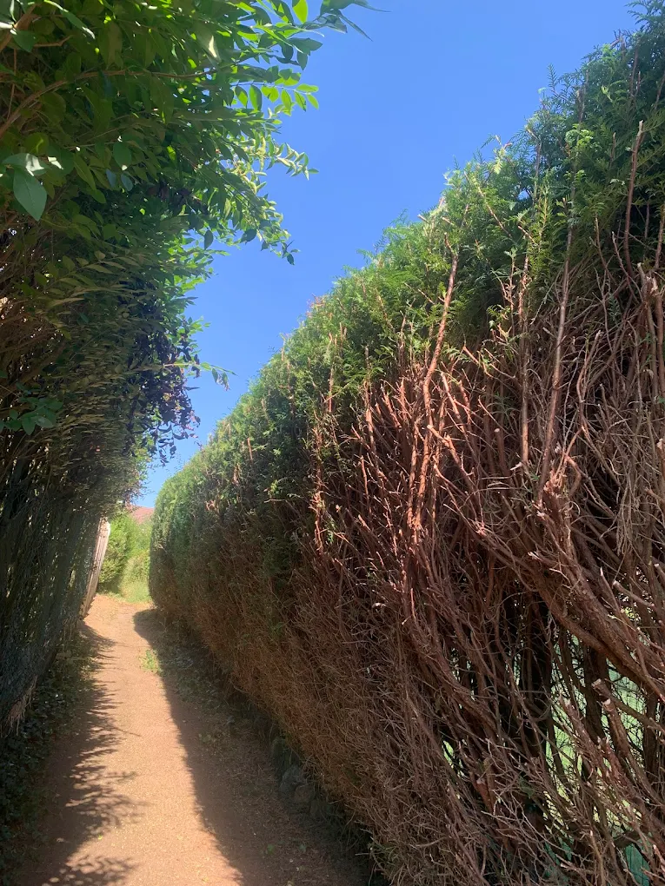
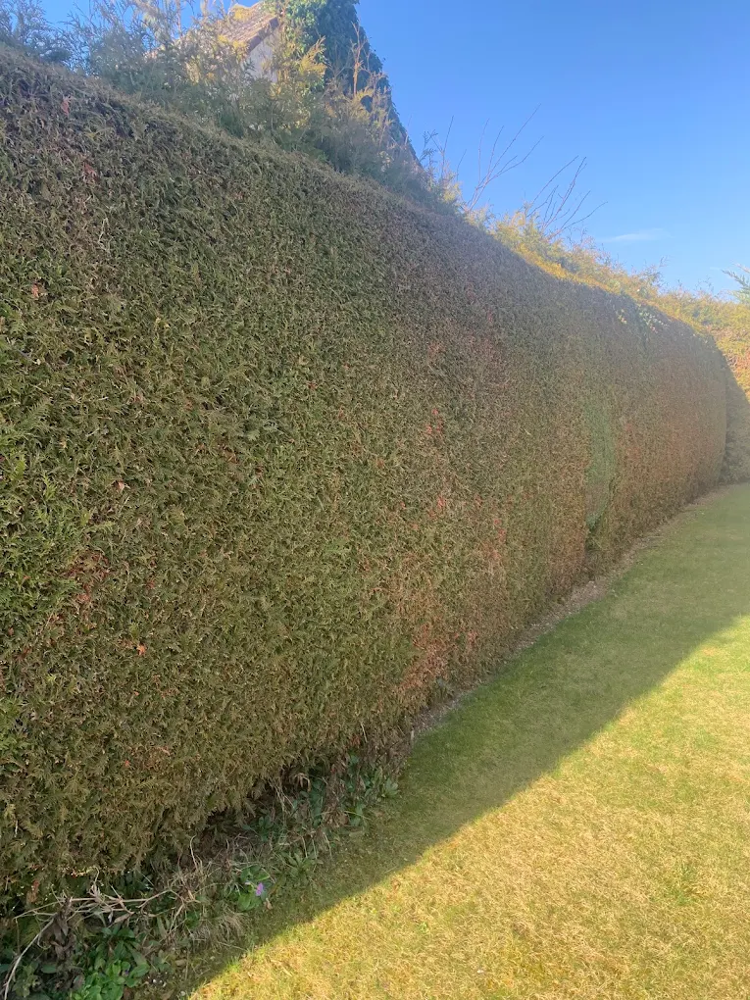
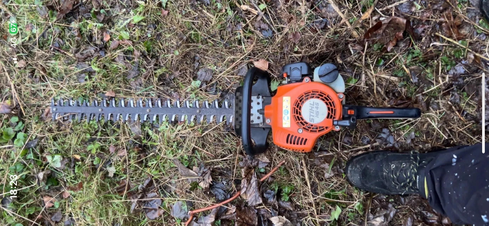

Nos Prestations de Taille
Nous disposons de taille-haies thermiques et sur perche pour atteindre le sommet de vos haies sans difficulté.

Classique
Taille d'Entretien
Pour garder une forme propre toute l'année :
- Taille de thuyas, lauriers, cyprès, troènes
- Taille au carré (rectiligne)
- 1 à 2 passages par an conseillés
- Finitions manuelles si nécessaire

Rénovation
Rabattage de Haie
Votre haie est devenue trop large ou trop haute ?
- Réduction importante de la hauteur
- Réduction de l'épaisseur
- Rajeunissement de vieux arbustes
- Conseils pour la reprise de végétation

Fleurissement
Arbustes & Rosiers
Pour favoriser la floraison et la santé des plantes :
- Taille des rosiers (printemps/automne)
- Taille des arbustes à fleurs
- Taille fruitière simple
- Suppression du bois mort

Inclus
Ramassage & Évacuation
La corvée de déchetterie, c'est fini :
- Ramassage complet des coupes
- Soufflage des allées et pieds de haie
- Chargement camion benne
- Transport en centre de recyclage